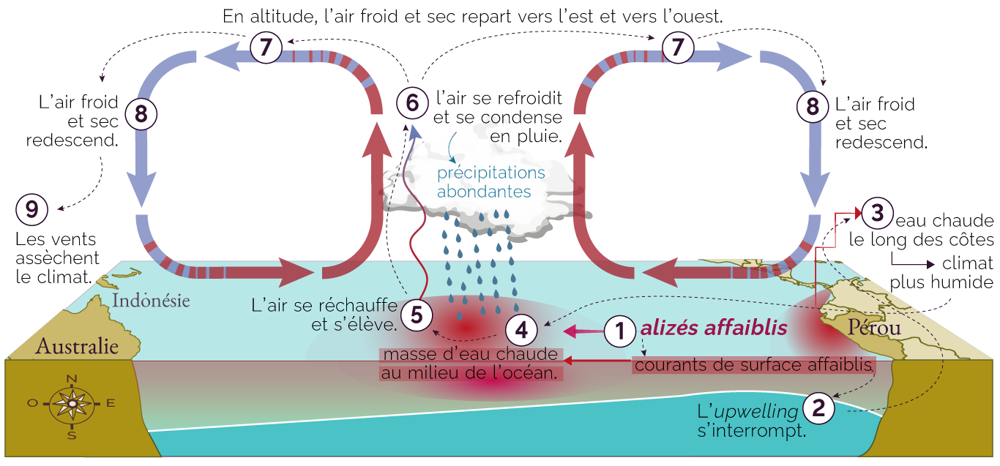
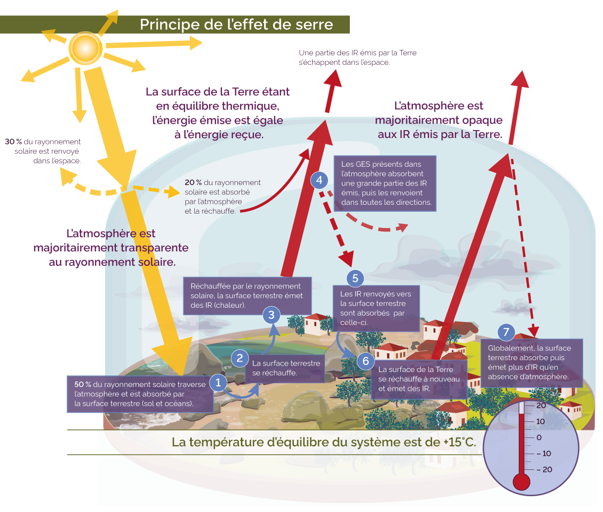

L'évolution des êtres vivants – apparition des groupes • cycle 3 • Educlever, 2022
La théorie du Big bang • cycle 4 • Educlever, 2017
Le monde enchanté de l'eau embouteillée, 2015
La constitution de la matière • cycle 4 • Educlever, 2017

Historique des crues majeures à Paris • water-words.net, 2012
L'origine du phénotype des individus • cycle 4 • Educlever, 2024
Le prix du chocolat selon la filière d'approvisionnement • cycle 4 • Educlever, 2017
La Terre dans l'univers – répartition de l'eau • cycle 5 • Educlever, 2021
Identifier la fonction des mots dans la phrase • cycle 4 • Educlever, 2017
Le vivant et son évolution – la reproduction • cycle 4 • Educlever, 2024
Les principes de l'apprentissage adaptatif • Livre blanc Adapter • Educlever, 2023
La Northern-Range • cycle 5 • Educlever, 2021
Qu'est-ce qu'un écosystème ? • cycle 4 • Educlever, 2024
Article sur l'ICE « L'eau, un droit humain » • Coordination Eau IdF, 2012

Les chemins de l'eau • water-words.net, 2015
Écosystème de Yellowstone : l'impact du loup • cycle 5 • Educlever, 2024
Le paysage • cycle 4 • Educlever, 2018
Les besoins alimentaires – quelques exemples • cycle 4 • Educlever, 2023
Une inégale répartition des espaces de production • cycle 5 • Educlever, 2022
Les migrations dans le monde • cycle 4 • Educlever, 2018
Comprendre le phénomène de lecture pour mieux le faciliter • Livre blanc Accompagner • Educlever, 2020
Déforestation et reboisement dans le monde • cycle 5 • Educlever, 2022
Proportions des enseignements de spécialité au lycée en Île-de-France • Educlever, 2021
La réforme du lycée 2020, mode d'emploi • cycle 5 • Educlever, 2020
L'organisation de la matière – les éléments dans l'univers • cycle 4 • Educlever, 2018
La réaction inflammatoire • cycle 4 • Educlever, 2024
La métropole de Londres – classement des villes globales • cycle 5 • Educlever, 2020
La Chine, puissance mondiale – émissions de CO2 dans le monde • cycle 5 • Educlever, 2021
Comment rester détendu, Conseils et méthodes pour préparer les examens, 2015
Le biogaz • cycle 4 • Educlever, 2024
Bilan thermique du corps humain, la température de référence • cycle 5 • Educlever, 2022
Les personnages des Faux Monnayeurs, André Gide • cycle 4 • Educlever, 2016
Mobilités et études intra-européenne • cycle 5 • Educlever, 2021
Les États-unis, une superpuissance mondiale • cycle 5 • Educlever, 2022
La reproduction végétale • cycle 4 • Educlever, 2017

Conséquences du changement climatique • cycle 4 • Educlever, 2018

Les zones humides • water-words.net, 2015
Chronologie des régimes autoritaires en Europe au XX
Méthode d'identification des solides usuels • cycle 4-5 • Educlever, 2018
Les circuits de distribution du lait • cycle 4-5 • Educlever, 2018
Le système immunitaires • cycle 4 • Educlever, 2024

Phénomène El Niño • cycle 4 • Educlever, 2023
Effets des mutations sur le phénotype, exemple avec la régulation des transcriptions – séquences régulatrices • cycle 5 • Educlever, 2021
Les différents types de relations au sein d'un écosystème • cycle 4 • Educlever, 2024
Variations du climat quaternaire – les paramètres de Milankovitch • cycle 5 • Educlever, 2021
L'absence d'effet de serre, modèle théorique

Les principes de l'effet de serre • cycle 4 • Educlever, 2020
cycle 4 • Educlever, 2024